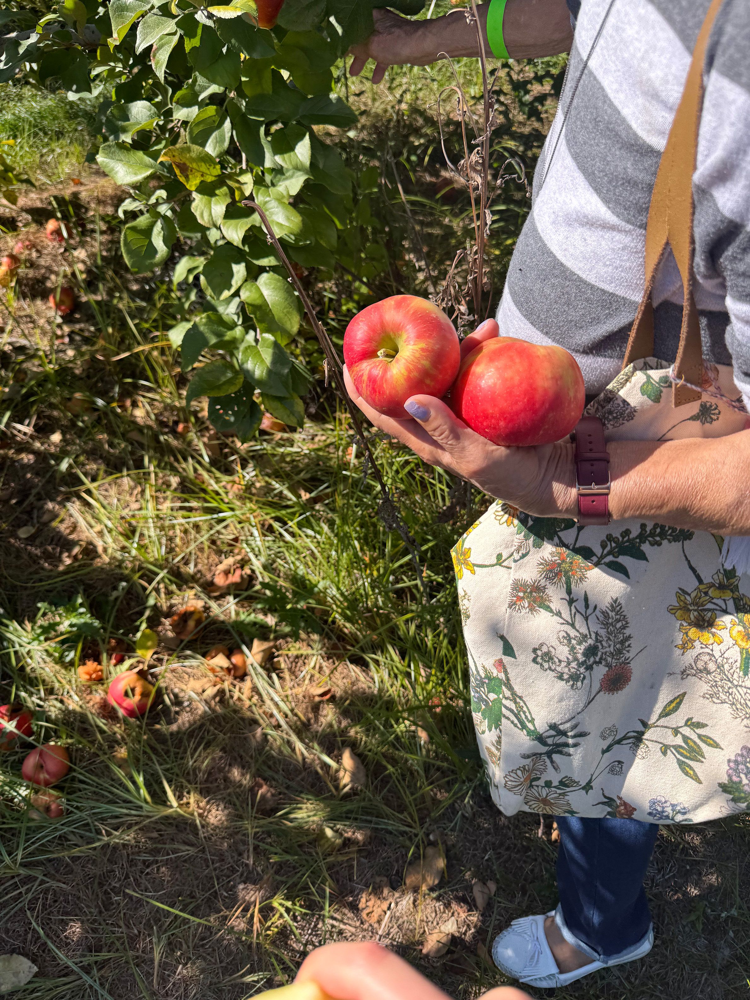
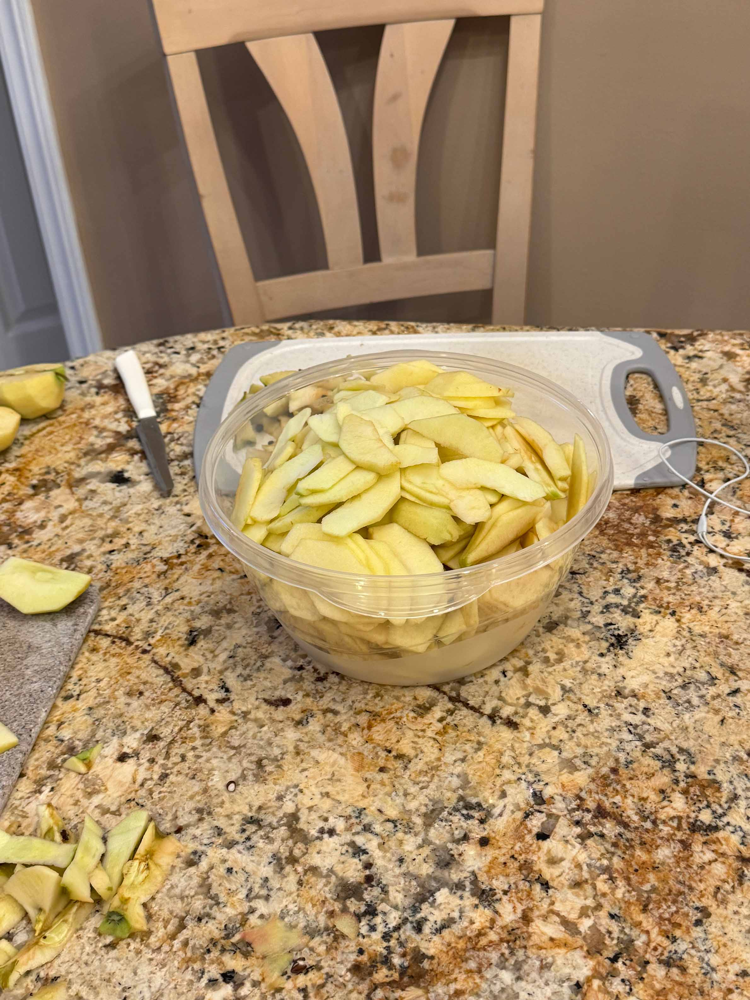
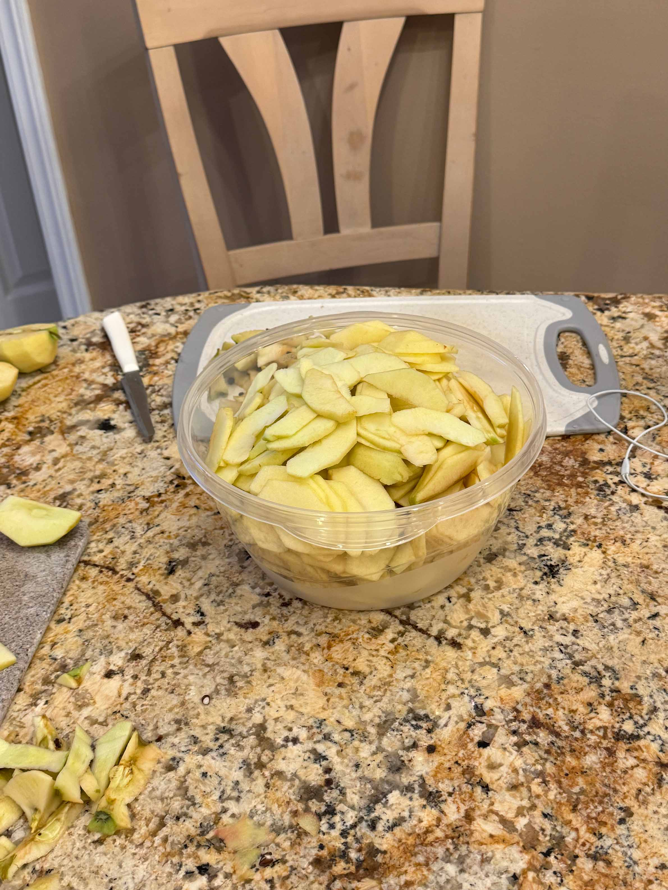
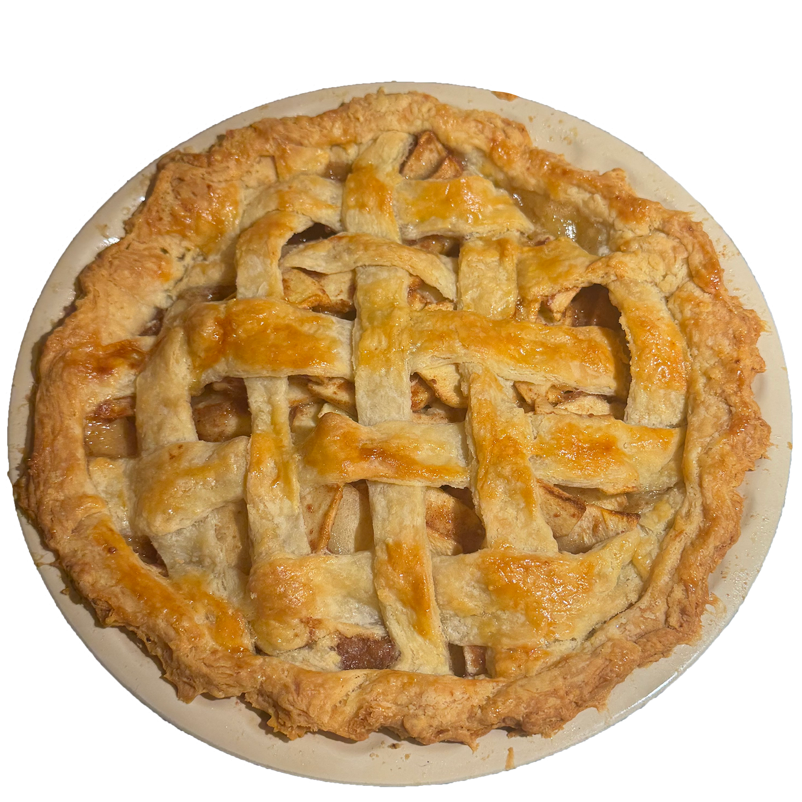

HARMONIC COLLECTION ENTRY 2
APPLE PIE RECIPE - APPLE PICKING
A family tradition for as long as I remember, we went apple picking this weekend. I have done this every fall since I was little because of my grandfather's love of the outdoors and gardening. He grew up on a farm in Sicily and once he moved to America, always found pleasure in growing his own fruits and vegetables to cook with. Though he has since passed away, my mom alwasy makes an effort to carry on his love of nature and cooking by picking apples and this entry is dedicated to him. There is also still an apple tree in the backyard of my house, planted by him almost 20 years ago (the apples plentiful, but the squirrels enjoy them LOTS)! To utilize some of the ones picked over this lovely September weekend, my sister baked some apple pie! Though not the first of the season, as she has baked pies with the apples from our tree, this one is certainly one of the best eaten.
INGREDIENTS
Harmonic Collection Entry 2The pie took 2 days, because the dough had to chill in the fridge, and my sister is the baker in the family, but had other plans for the weekend. Once the dough was ready the next day, the apples were thinly sliced and seasoned with a mixture of the spices, sugar, and lemon juice. After setting aside, the dough is rolled out thinly to fit over the pie dish, with the excess of it used to over the top/apples layered inside.

PROCESS PHOTOS
 

Of course, the pie tastes better knowing that I hand-picked the ingredients in them as well as being aware of the fact that my grandfather would really enjoy eating it with us (and apples were his favorite fruit). He would always bring his own knife to the apple farms to cut pieces of the fruit for us all to share, and I would ride on his back to reach the higher branches of the trees. My grandpa is the reason for my sisters' and my love of cooking. Here's a photo with him and my younger sister where he is teaching her how to make bread:

On the bright side, we will be making lots of baked goods in his honor, as there are still roughly 20 pounds of apples left from the weekend's outing!
TIME TO ENJOY
JUST TOP IT WITH SOME VANILLA ICE CREAM!
BONUS PHOTO

little sis around 12 years ago on another one of our apple endeavours